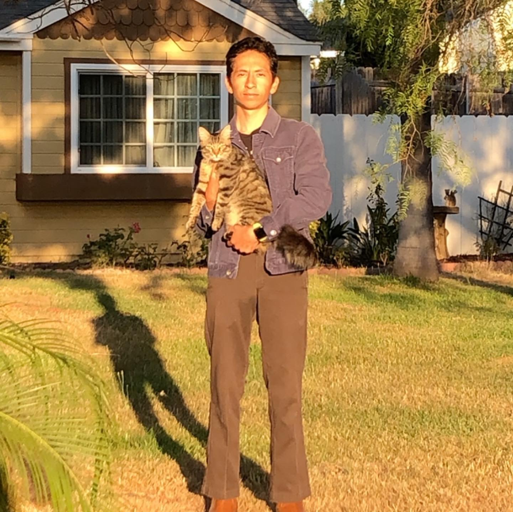

Francisco Amezcua

Francisco "Pacs" Amezcua is a Computer Science undergraduate student at the University of California Santa Cruz.
He enjoys rock climbing, skating, and playing chess in his free time. Initially, he wanted to be a film major,
but quickly realized that a film degree wasn't required to be a director or cinematographer. The same could be
said about a CS degree, but he believes he made the right choice. He hopes to become a researcher in artificial
intelligence, creating art/passion projects on his own time.
Currently he is focused on his undergraduate studies, working towards a mastery in chess.